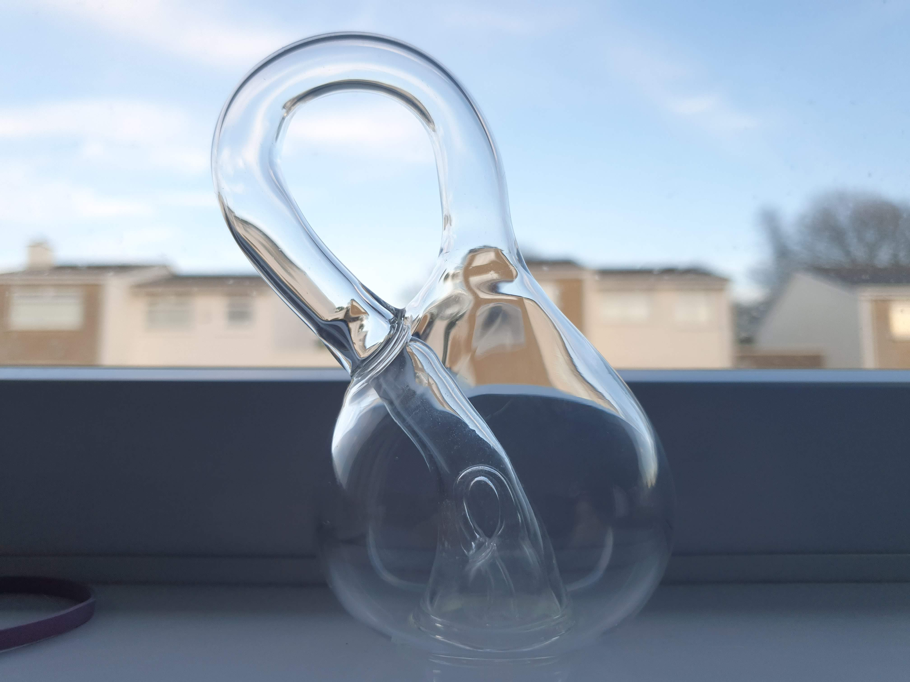

As Orientable as a Sphere
27 Mar 2020

In 1882, A German mathematician, Felix Klein, sitting behind his desk thought about what happened when you turned a Möbius Loop into the 4th dimension and forming a closed manifold.
This closed manifold can be described using this equation:
Long isn't it? But isn't it so very mesmerizing, just messes of sines and cosines to create a very realistic Klein bottle.
A Möbius Loop is a what happens when you take a strip of paper and make a half twist and connect the two sides. It produces a loop of
paper that actually has one side. Try it yourself, grab any strip of paper and preform a half twist with one end and then connect it with
some tape or glue, take the model you've just created, now pinch the paper and run your finger from your thumb along the loop, you shall
then meet your index finger. Cool right? Thats because there is no 'other side', they are all the same side!
A Möbius strip is a type of surface called a manifold. A manifold is a topological space, meaning you can stretch it and move it under the rules
of topology, just don't make any more holes as that changes a value called the genus of the surface. This is why you will find many topologists eating
coffee cups and drinking out of donuts! They have the same genus and can be stretched into each other using the rules of topology.
For our purposes, every point on a manifold has to connected, you can't have any funny discontinuities, or holes. We will also assume this because it gets
a bit yucky otherwise! We will also denote a manifold by the dimension it lives in, so a Möbius loop is a 2 dimensional manifold and a plane a 1 dimensional
manifold. Note that we class them by their dimension minus 1.
We will define something called orientability of a surface. The orientability of a manifold is whether you can make a consistent choice of normal vectors all
over a surface, so you couldn't have a vector pointing upwards and downwards in the same point. An easier way to think about this would be a cat walking over the
surface of a manifold and whether it would rotate around 180 degrees as it got to the other side.
Some examples of orientable manifolds are Tori, also known as Donuts, spheres and planes. In Euclidean Geometry if it has exactly one side, then it is Orientable.
Whilst Klein Bottles, Möbius Strips and Projective Planes are non-orientable.
Taking the example of the Möbius strip, if a cat had a wonder across the surface, placing a treat on the other side, the cat would first try to cut through the strip
and be lazy, but eventually it would decide to walk around and it would be able to get the treat, but this cat has a spot on his left side, so looking face down at the
strip, as the cat gets to the other side you wouldn't see his spot. He would've been flipped 180 degrees.
To construct a klein bottle we can follow the following limerick:
A mathematician named Klein
Thought the Möbius band was divine.
Said he: "If you glue
The edges of two,
You'll get a weird bottle like mine."
- Leo Moser
This limerick is very very nice, but mathematically incorrect, I prefer this version,
You can glue the edges of two
But an extra element is due
Not a strip in 2D but four dimensionally
Allows kleins bottle to move through
- James Arthur
So the Klein bottle is the 4D Projection of the Möbius strip. Moving one edge to the other. If we can say that as Möbius strips are non-orientable, then klein bottles must be non-orientable aswell!
I will probably revisit this topic at a later date and look in a slightly more rigorous sense!
About Me

I am a Mathematical nutcase that is also a programmer, I spend a lot of time doing and thinking Maths, here are those musings along the way.